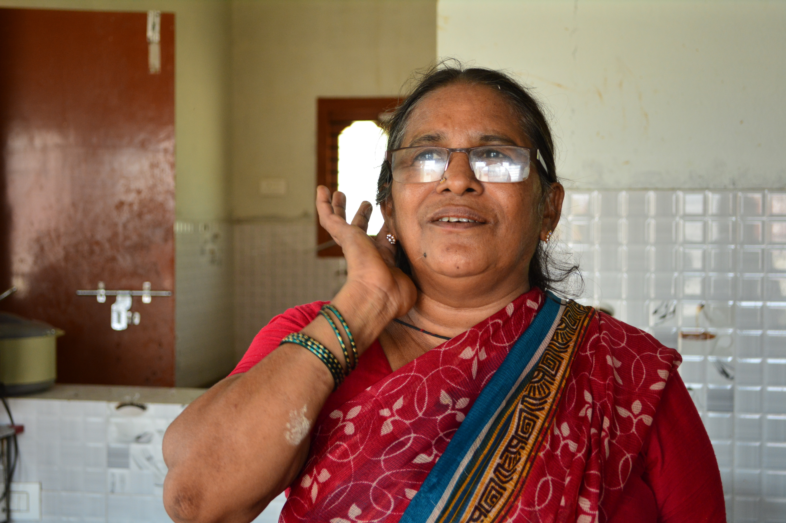

Bibi has been feeding the children of Aarti Home for over fifteen years. Every morning she rises before dawn to ensure that every girl who sits down to breakfast is nourished and ready to face her day. To the residents, her kitchen is where they feel most at home.
Bibi herself grew up in a family that struggled with food insecurity. She learned to cook out of necessity, stretching small amounts of rice and lentils into meals that felt like abundance. She brought that same resourcefulness to Aarti.
Over the years her role has grown far beyond cooking. She is a confidante, a stabilising presence, and for many girls a surrogate mother figure.
“A hungry child cannot learn. A loved child can do anything. I try to do both — fill their stomachs and warm their hearts.”
Bibi has prepared tens of thousands of meals for Aarti's residents. But what she feeds them goes far beyond nutrition — it is a daily reminder that someone cares.
In recognition of her dedication, Bibi has been honoured by Aarti For Girls as a cornerstone of the organisation's family.